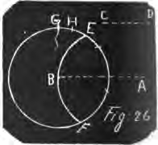
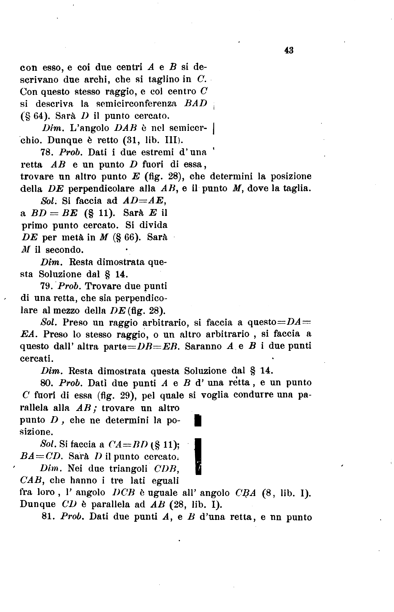

Book IV §§ 76–77: Perpendicular Lines with Compass Alone¶
Lorenzo Mascheroni (The Geometry of the Compass, Pavia 1797, §§ 76–77, pp. 42–43)
Problem. Two points \(A\) and \(B\) being given (fig. 26); to find a point \(H\) such that the straight line \(BH\) is perpendicular to \(AB\) at \(B\) and equal to a given distance \(CD\).


Solution. Double \(AB\) in a straight line so that \(BE = AB\) (§ 64). Then with centers \(A\) and \(E\) and radius \(CD\), describe two arcs intersecting in \(H\). The point \(H\) will be the sought point.
Demonstration. Since by construction \(AH = EH = CD\), and the base \(AE\) is bisected at \(B\), the line \(BH\) is the altitude of isosceles triangle \(\triangle AHE\), and is therefore perpendicular to \(AE\), that is to \(AB\) (Euclid I.8, I.13). Which was to be constructed.
Problem. Two points \(A\) and \(B\) being given; to find a point \(D\) such that \(DA\) is perpendicular to \(AB\) (fig. 27).


Solution. With an arbitrary radius greater than half of \(AB\), describe two arcs from centers \(A\) and \(B\) intersecting in \(C\). With center \(C\) and radius \(CA\), describe semicircle \(BAD\) (§ 64). The point \(D\) will be the sought point.
Demonstration. Since \(BD\) is a diameter of the circle with center \(C\), angle \(\angle BAD\) is inscribed in a semicircle; hence it is a right angle (Euclid III.31). Therefore \(DA\) is perpendicular to \(AB\) at point \(A\).